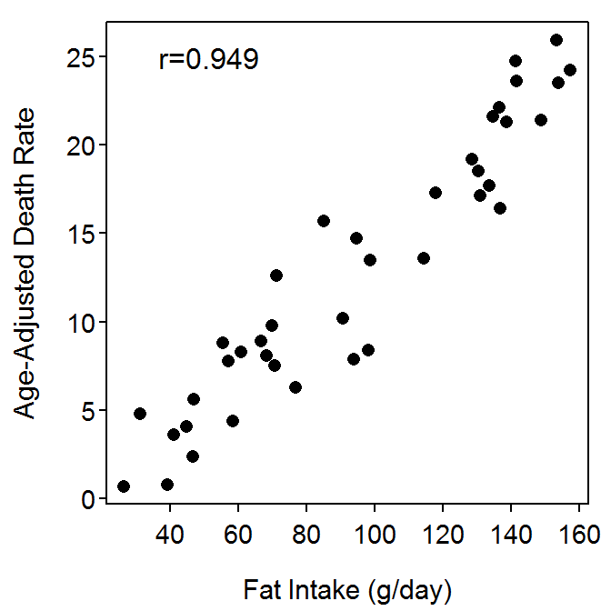

Note: Your answers to the questions below should follow the expectations for homework found here (and demonstrated here). Date due on Dates page.
Carroll (1975) examined the relationship between per capita consumption of animal fat (g/day; AnimFatI) and age-adjusted death rate from breast cancer (AgeAdjDe) for 39 countries. Use the following results from her data to describe the bivariate relationship between these two variables.

The instantaneous discharge (cubic feet per second) and total suspended sediments (in milligrams per liter) were recorded on 28 dates for North Fish Creek near Ashland, WI. These data are found in FishCrNWaterQuality.csv (data, meta). Describe the relationship between instantaneous discharge and total suspended sediments from these data.